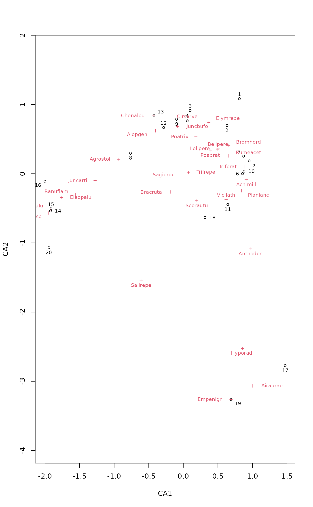

Ordination Plots with Points and Optimized Locations for Text
ordipointlabel.RdFunction produces ordination plots with points and text labels to the points. The points are in the fixed locations given by the ordination, but the locations of the text labels are optimized to minimize overplotting. The function is useful with moderately crowded ordination plots.
Arguments
- x
For
ordipointlabela result object from an ordination function or an ordination plot (possibly in a pipe). Forplot.ordipointlabelan object fromordipointlabel.- display
Scores displayed in the plot. The default is to show
"sites"and"species"that are available to many ordination methods, but there can be only one set or more than two set of scores todisplay.- choices
Axes shown.
- col, pch, font, cex
Colours, point types, font style and character expansion for each kind of scores displayed in the plot. These should be vectors of the same length as the number of items in
display, or if there is only onedisplaythey can be a vector of the length of number items.- add
Add to an existing plot. Default is
add = TRUEwhen the function is used in a pipe, andFALSEusually.- labels
Labels used in graph. Species (variable) and SU (row) names are used if this is missing. Labels must be given in one vector for all scores of
display. Functionlabelscan extract the current name from a savedordipointlabelobject.- bg
Background colour for labels. If this is given, texts is drawn over non-transparent background. Either a single colour or vector of colours for each
display, or with one display, for each label.- select
Items to be displayed. This can either be a logical vector which is
TRUEfor displayed items or a vector of indices of displayed items.selectis only used if a single set of scores is being plotted (i.e.length(display) == 1), otherwise it is ignored and a warning issued. If a logical vector is used, it must have the same length as the scores plotted.- ...
Details
The function uses simulated annealing (optim,
method = "SANN") to optimize the locations of the text labels
to the points. There are eight possible locations: up, down, two sides
and four corners. There is a weak preference to text away from zero,
and a weak avoidance of corners. The locations and goodness of
solution varies between runs, and there is no guarantee of finding the
global optimum, or the same text locations twice. The optimization can
take a long time in difficult cases with a high number of potential
overlaps. Several sets of scores can be displayed in one plot.
The function can be used in a pipe where the first command is an
ordination plot command with type = "n" or to add
points and lablels to save vegan ordination plot object. See
examples.
Value
The function returns invisibly an object of class
ordipointlabel with items xy for coordinates of
points, labels for coordinates of labels, items pch,
cex and font for graphical parameters of each point or
label. In addition, it returns the result of optim as
an attribute "optim". The unit of overlap is the area
of character "m", and with varying graphical parameters the
smallest alternative.
There is a plot method based on orditkplot but it
does not alter or reset the graphical parameters via par.
The result object from ordipointlabel inherits from
orditkplot of vegan3d package, and it may
be possible to further edit the result object with
orditkplot, but for good results it is
necessary that the points span the whole horizontal axis without empty
margins.
See also
The function is invoked for one set of scores (one
display) from text.ordiplot and
plot.cca with argument optimize = TRUE.
Examples
data(dune, dune.env)
ord <- cca(dune)
ordipointlabel(ord)

## Use in a pipe: optimize species, sites & centroids together
ord <- cca(dune ~ Management + Moisture, dune.env)
plot(ord, scaling = "symmetric", type = "n") |>
ordipointlabel(c("sites","species","centroids"), cex=c(0.7,0.7,1),
col = c("black","red","blue"), font = c(1,3,1), pch=c(1,3,4), xpd=TRUE) |>
text("biplot", col = "blue", bg = "white", cex=1)
 #> Error in text.default(x$labels, labels = rownames(x$labels), cex = cex, col = col, font = font, ...): invalid font specification
#> Error in text.default(x$labels, labels = rownames(x$labels), cex = cex, col = col, font = font, ...): invalid font specification